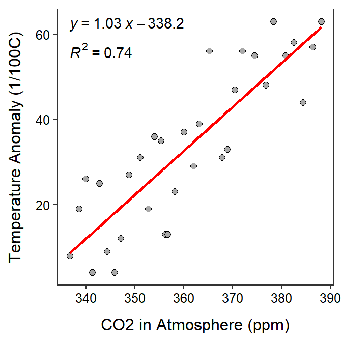
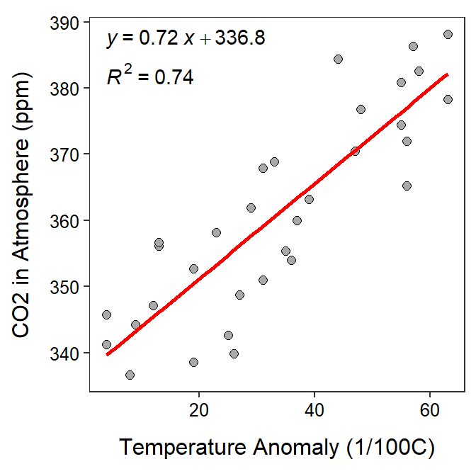

Climate Change Data
 Climate researchers examined the relationship between global temperature anomaly and the concentration of CO2 in the atmosphere. Temperature anomaly data was recorded as the Global Land-Ocean Temperature Index from the Goddard Institute of Space Studies (GISTEMP). It is reported in units of 1/100 of a degree centigrade increase above the 1950-1980 mean. The CO2 data are from The Earth System Research Laboratory of the National Oceanic and Atmospheric Administration (NOAA). Specifically, these data are a record of annual mean atmospheric CO2 concentration at Mauna Loa Observatory, Hawaii, and constitute the longest continuous record of atmospheric CO2 concentration. This remote location at high altitude in Hawaii was chosen because it is relatively unaffected by any local emissions and so is representative of the global concentration of a well-mixed gas like CO2. These observations were started by C. David Keeling of the Scripps Institution of Oceanography in March of 1958 and are often referred to as the Keeling Curve. Data are reported as a dry mole fraction defined as the number of molecules of carbon dioxide divided by the number of molecules of dry air multiplied by one million (ppm). Our goal here is to determine if the variability in the temperature anomaly records can be reasonably explained by the CO2 values in the same year.
Climate researchers examined the relationship between global temperature anomaly and the concentration of CO2 in the atmosphere. Temperature anomaly data was recorded as the Global Land-Ocean Temperature Index from the Goddard Institute of Space Studies (GISTEMP). It is reported in units of 1/100 of a degree centigrade increase above the 1950-1980 mean. The CO2 data are from The Earth System Research Laboratory of the National Oceanic and Atmospheric Administration (NOAA). Specifically, these data are a record of annual mean atmospheric CO2 concentration at Mauna Loa Observatory, Hawaii, and constitute the longest continuous record of atmospheric CO2 concentration. This remote location at high altitude in Hawaii was chosen because it is relatively unaffected by any local emissions and so is representative of the global concentration of a well-mixed gas like CO2. These observations were started by C. David Keeling of the Scripps Institution of Oceanography in March of 1958 and are often referred to as the Keeling Curve. Data are reported as a dry mole fraction defined as the number of molecules of carbon dioxide divided by the number of molecules of dry air multiplied by one million (ppm). Our goal here is to determine if the variability in the temperature anomaly records can be reasonably explained by the CO2 values in the same year.

- What is the response variable? [Hint: Read the rest of the questions before answering this question.]
- What is the explanatory variable?
- In terms of the variables of this problem, what is the equation of the best-fit line?
- In terms of the variables of this problem, interpret the value of the slope.
- In terms of the variables of this problem, interpret the value of the intercept.
- What is the predicted temperature anomaly if the CO2 is 360 ppm?
- What is the predicted temperature anomaly if the CO2 is 250 ppm?
- What is the residual if the temperature anomaly is 40 and the CO2 is 380 ppm?
- What proportion of the variability in temperature anomaly is explained by knowing the CO2 amount?
- What is the correlation coefficient between temperature anomaly and CO2 amount?
- How much will the predicted temperature anomaly change if the CO2 amount increased by 20 ppm?
- What aspect of this regression analysis concerns you? [Hint: consider the regression assumptions]?